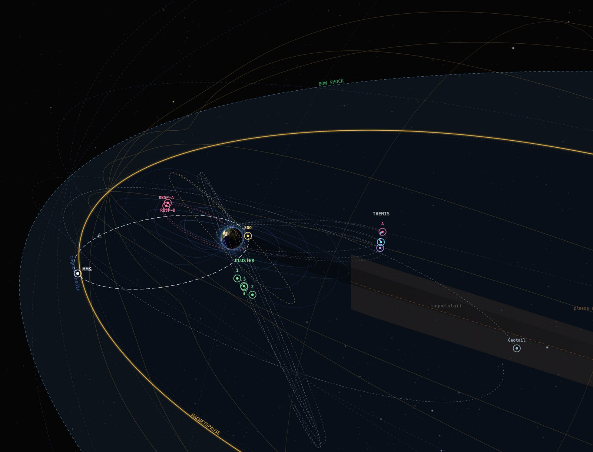

Dashed: 2 nPa and Bz = 0, for comparison.
The physics
Helios draws the magnetosphere from published models, written from studies and checked against reference code. Below, move the sliders to change the solar wind: the magnetopause and bow shock respond as Shue et al. (1998) and Jelínek et al. (2012) predict.
Magnetopause, magnetotail and bow shock
The magnetopause in Helios's views is Lin et al. (2010), a three-dimensional surface that leans with the dipole tilt and dips in at the cusps. Shue et al. (1998) gives the stand-off distance in the readouts. Down the tail, the magnetosphere's surface flares as described by Petrinec & Russell (1996).
The bow shock is Jelínek et al. (2012), widening into a Mach cone far downstream. Every boundary follows the solar wind of the moment and turns with the aberration from Earth's orbital motion.
Lin et al. 2010, doi:10.1029/2009JA014235 · Shue et al. 1998, doi:10.1029/98JA01103 · Petrinec & Russell 1996, doi:10.1029/95JA02834 · Jelínek et al. 2012, doi:10.1029/2011JA017252

Trace Earth's magnetic field lines
Field lines start from the International Geomagnetic Reference Field (IGRF-14). Tsyganenko's models add the magnetosphere's own currents: T89, driven by Kp, or T01, driven by the solar wind and Dst. An adaptive Dormand–Prince integrator traces each line, marks it open or closed and puts its feet at 110 km above the Earth's surface.
Choose a Kp. As activity rises, the nightside field stretches further down the tail.
Beggan et al. 2026 (IGRF-14), doi:10.1186/s40623-025-02360-0 · Tsyganenko 1989, doi:10.1016/0032-0633(89)90066-4 · Tsyganenko 2002, doi:10.1029/2001JA000219 · Dormand & Prince 1980
The Van Allen belts
AE-8 and AP-8 are NASA's maps of trapped electrons and protons at solar maximum and minimum. The CRRES maps add electrons that follow geomagnetic activity, through the 15-day mean of Ap, and protons for quiet and active times.
In Helios the belts are a 3-D volume or a set of cuts on a centered dipole, and they change as the time machine runs.
Vette 1991 (AE-8) · Sawyer & Vette 1976 (AP-8) · Brautigam & Bell 1995 (CRRESELE) · Meffert & Gussenhoven 1994 (CRRESPRO)
The auroral oval
Starkov's model gives the oval's poleward and equatorward edges, and the edge of the diffuse aurora, at every magnetic local time. Helios drives it with the hour's mean AL index from OMNI, or with Kp when AL is missing.
Starkov 1994 · Sigernes et al. 2011, doi:10.1051/swsc/2011003
The rest of the toolkit
Coordinates
GEI, GEO, MAG, SM, GSM and GSE follow Hapgood's definitions and are checked against PySPEDAS's coordinate transforms.
Solar wind
For past events Helios uses OMNI, already shifted to the bow-shock nose. For recent ones it uses NOAA's propagated product, or works out the delay from each L1 monitor itself.
The Sun
SDO's images from May 2010 and SOHO's back to 1996, through Helioviewer, on a sphere that turns as the Sun does.
Magnetic footprints
On the low-Earth-orbit globe, each spacecraft's field-line footpoint has a track an hour either side and shows the all-sky cameras that can see it.
Planetary and spacecraft positions
Spacecraft come from JPL Horizons and NASA's SSCWeb. Planets come from JPL's Keplerian elements.
Sky
The Yale Bright Star Catalogue and NASA's Deep Star Maps, with the Milky Way and the constellations when you want them.
Sources
The figures on this page run in your browser. The boundary and oval formulas are ported from Helios's code; the field lines and radiation-belt cuts were computed by Helios itself.
- Beggan, C. D., et al. (2026). International Geomagnetic Reference Field: the fourteenth generation. Earth, Planets and Space, 78, 127. doi:10.1186/s40623-025-02360-0
- Brautigam, D. H., & Bell, J. T. (1995). CRRESELE documentation (PL-TR-95-2128). Phillips Laboratory.
- Dormand, J. R., & Prince, P. J. (1980). A family of embedded Runge–Kutta formulae. J. Comput. Appl. Math., 6(1), 19–26. doi:10.1016/0771-050X(80)90013-3
- Hapgood, M. A. (1992). Space physics coordinate transformations: a user guide. Planet. Space Sci., 40(5), 711–717. doi:10.1016/0032-0633(92)90012-D
- Jelínek, K., Němeček, Z., & Šafránková, J. (2012). A new approach to magnetopause and bow shock modeling based on automated region identification. JGR, 117, A05208. doi:10.1029/2011JA017252
- Lin, R. L., et al. (2010). A three-dimensional asymmetric magnetopause model. JGR, 115, A04207. doi:10.1029/2009JA014235
- Meffert, J. D., & Gussenhoven, M. S. (1994). CRRESPRO documentation (PL-TR-94-2218). Phillips Laboratory.
- Petrinec, S. M., & Russell, C. T. (1996). Near-Earth magnetotail shape and size as determined from the magnetopause flaring angle. JGR, 101(A1), 137–152. doi:10.1029/95JA02834
- Sawyer, D. M., & Vette, J. I. (1976). AP-8 trapped proton environment for solar maximum and solar minimum (NSSDC/WDC-A-R&S 76-06). NASA GSFC.
- Shue, J.-H., et al. (1998). Magnetopause location under extreme solar wind conditions. JGR, 103(A8), 17691–17700. doi:10.1029/98JA01103
- Sigernes, F., et al. (2011). Two methods to forecast auroral displays. J. Space Weather Space Clim., 1, A03. doi:10.1051/swsc/2011003
- Starkov, G. V. (1994). Geomagnetism and Aeronomy, 34(1), 101–103, and 34(3), 331–336.
- Tsyganenko, N. A. (1989). A magnetospheric magnetic field model with a warped tail current sheet. Planet. Space Sci., 37(1), 5–20. doi:10.1016/0032-0633(89)90066-4
- Tsyganenko, N. A. (2002). A model of the near magnetosphere with a dawn-dusk asymmetry, parts 1 and 2. JGR, 107(A8). doi:10.1029/2001JA000219
- Vette, J. I. (1991). The AE-8 trapped electron model environment (NSSDC/WDC-A-R&S 91-24). NASA GSFC.